Github个人博客部署
安装ruby
下载地址：https://rubyinstaller.org/downloads
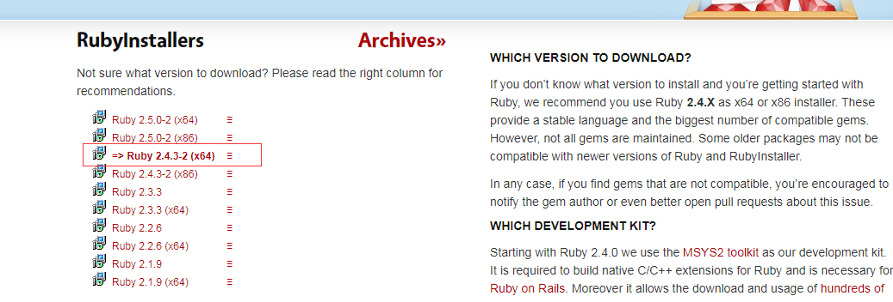
Ruby安装完，cmd命令
ruby -v
gem -v
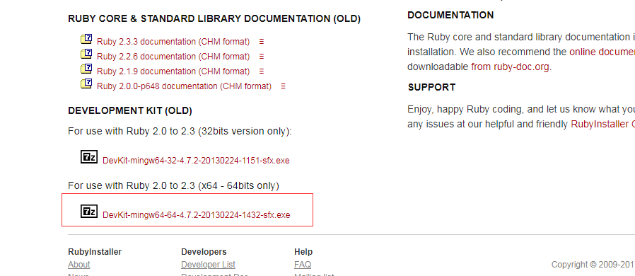
DevKit-mingw64-64-4.7.2-20130224-1432-sfx.exe运行，解压目录如下
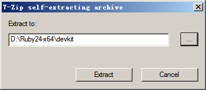
安装 msys2
下载地址：http://sourceforge.net/projects/msys2
安装 jeky、bundler
gem install jekyll bundler
如果出错，尝试 gem install jekyll -v 3.3 或 gem update
新建jekyll博客
jekyll new my-blog
cd my-blog
删除默认md文件、Gemfile.lock和_XX目录
采用主题
https://github.com/yizeng/jekyll-theme-simple-texture/tree/master/starter-kit
下载该主题，并覆盖my-blog下面的文件
将你的markdown文件放置于 _post 文件夹下面，可以自己创建文件夹给markdown分类
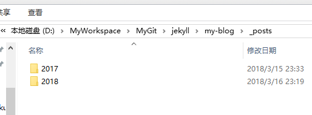
文件名命名：日期-文件名（最好是英文的名字）
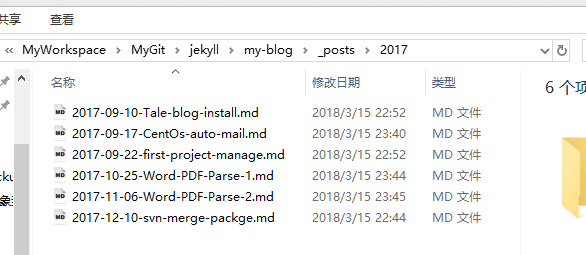
因为这个关系到每个博客的http路径，带中文容易出问题
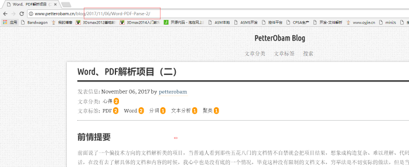
命令行下：bundle install
命令行下：bundle exec jekyll serve
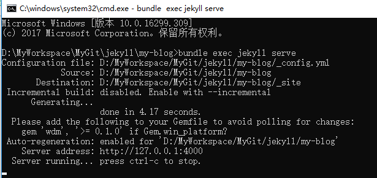
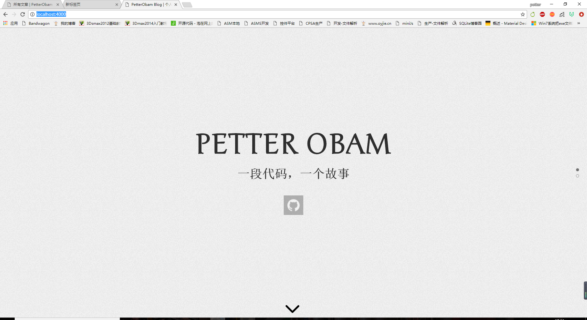
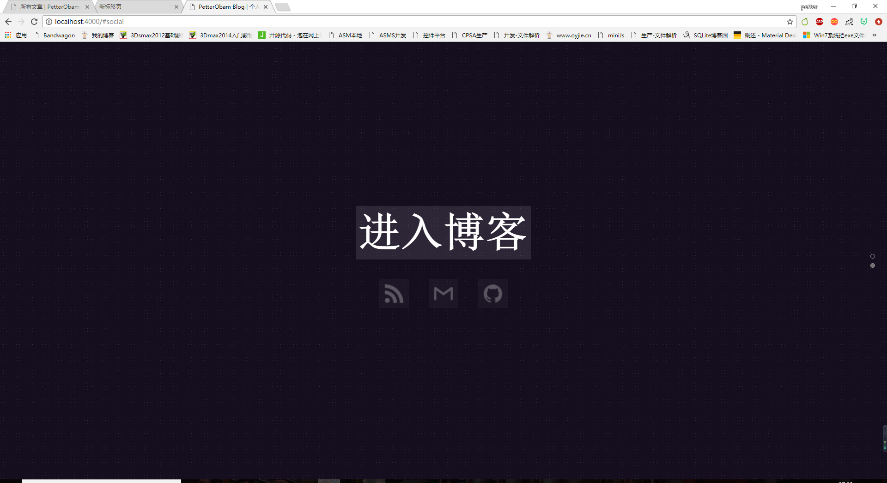
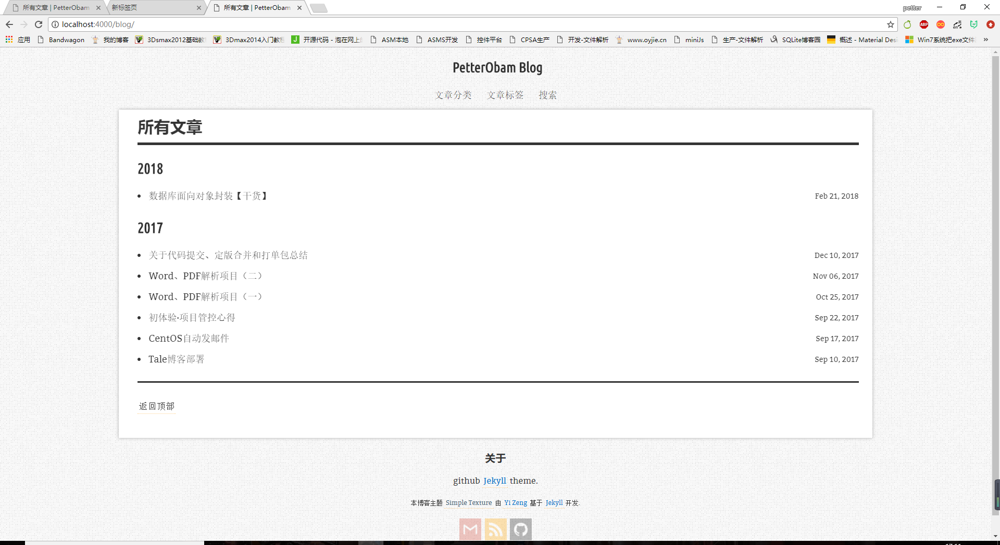
其中 _config.yml 和 _data 文件夹下面的yml文件控制着页面一些元素的文本显示
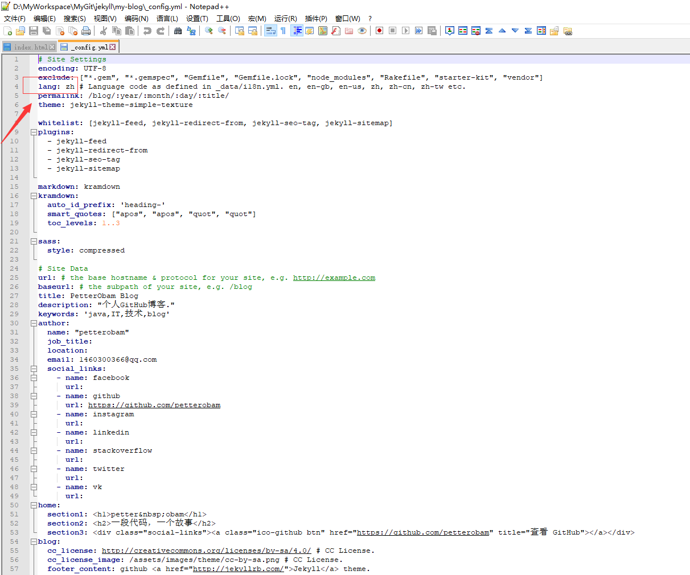
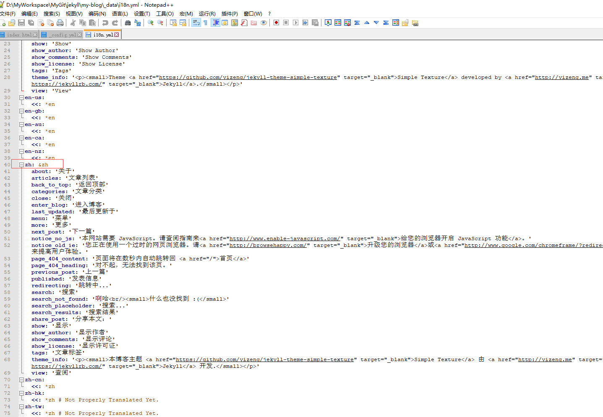
推送到github
摸索实验就可以发现修改界面的规律，在本地调好后就可以将 my-blog下面的文件推到github
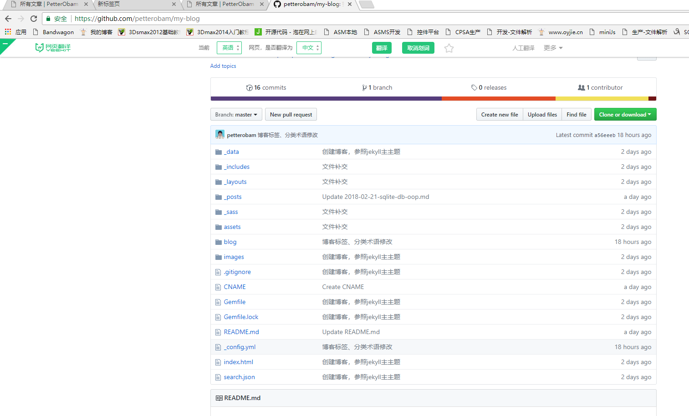
域名绑定
开启github page ， 并绑定你的域名
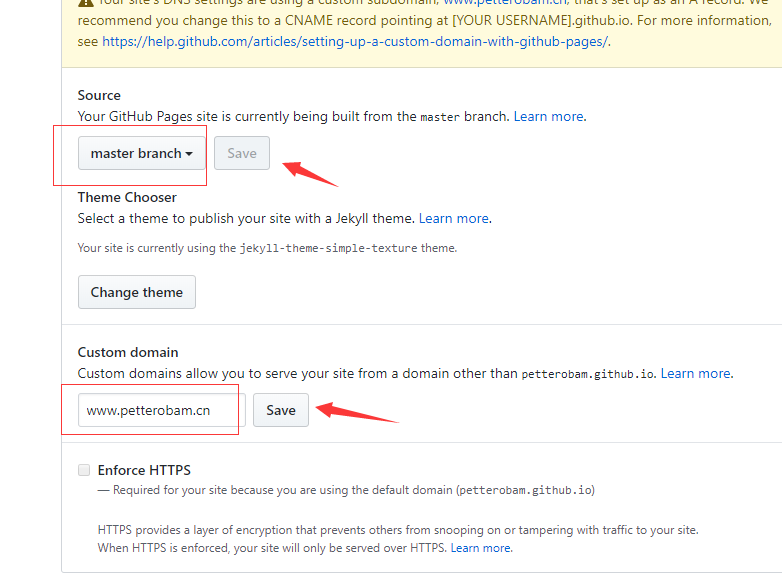
然后，在阿里云或其他域名解析处添加 A记录 和 @记录，指定的IP可以ping下自己github.io的IP。
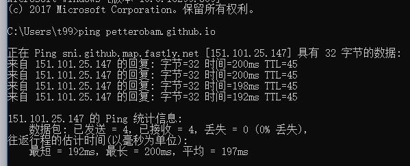
然后访问 www.petterobam.cn ，OK
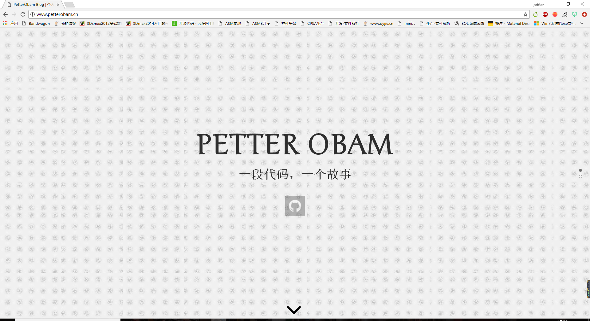
额外情况
https://github.com/jekyller/jasper2
如果是非标准的jekyll主题，还需要travis-ci辅助编译，并将静态页面发布到 对应github项目的 gh-pages 分支
具体细节需要注意的有：
- 到你的github 获取 GH-TOKEN
https://github.com/settings/tokens
为公共仓库启用“public_repo”访问权限
然后记住他展示的TOKEN，因为那个只显示一次
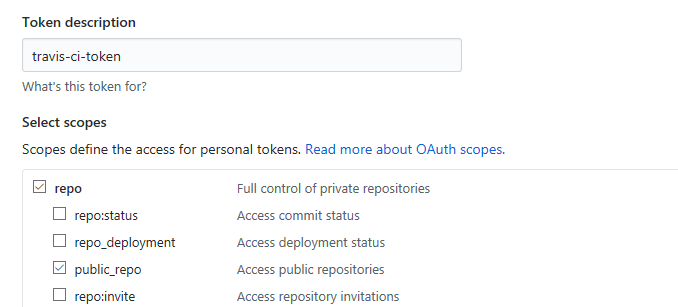
- Travis-ci 需要添加额外属性，主要包括GH-TOKEN、GIT_NAME、GIT_EMAIL，例如：
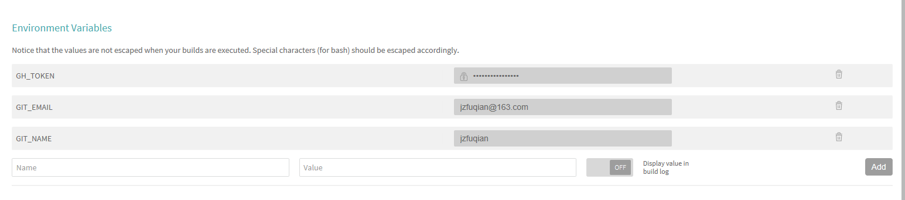
-
[可选]在你的电脑上安装travis，并生成travis-encrypt
gem install travis
然后这个其中 ```<api-token>``` 就是你在travis定义的额外属性，形如：travis-encrypt用在.travis.yml文件中，形如：
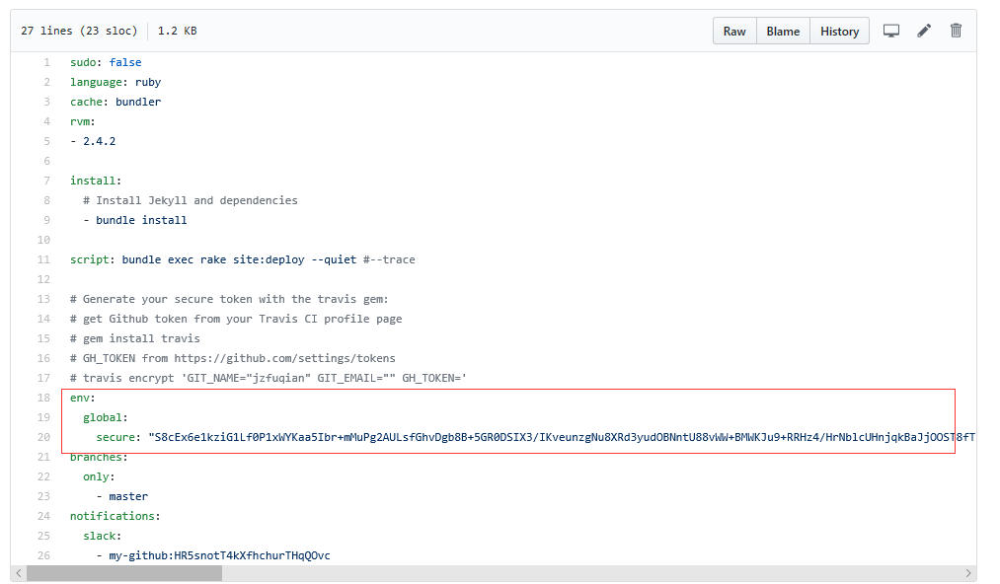
- 更多详细信息请参见 jekyll-travis：https://github.com/mfenner/jekyll-travis
额外情况博客部署效果图
集成博客评论系统
基于 github issue
https://github.com/settings/applications/new
申请OAuth application
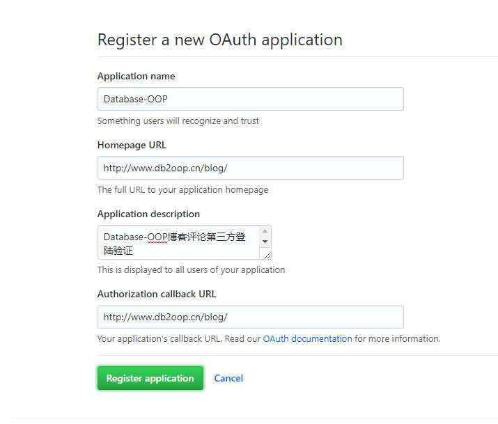
让域名支持HTTPS
这个东西不强求，但是会在浏览器地址栏有个绿色的小锁（逼格.png）
https://jingyan.baidu.com/article/f79b7cb3309be79144023ea4.html
或者用 cloudflare 加持 https：https://www.cloudflare.com/
JVM工具学习笔记
-
Cmd控制台：
jconsole回车，可以直接打开 java 监视管理控制台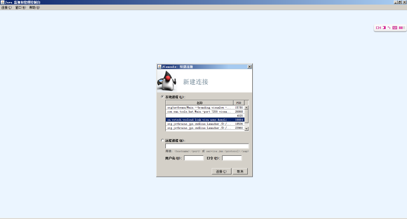
-
Cmd控制台
jsp，查看运行中的java进程pid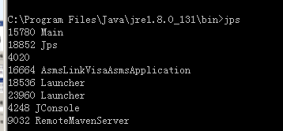
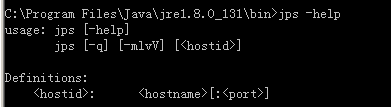
-q 不输出类名、Jar名和传入main方法的参数 -m 输出传入main方法的参数 -l 输出main类或Jar的全限名 -v 输出传入JVM的参数 -
Cmd控制台：
jstack pid，查看进程堆栈信息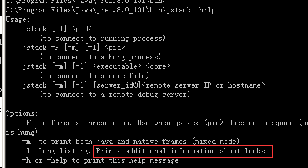
-
jmap&jhat
- Cmd控制台:
jmap -dump:live,file=xxx.map [正在运行java的进程PID]，可以导出进程JAVA相关信息，例如：jmap -dump:live,file=visa-asms-link.map 16664 - Cmd控制台:
jhat -J-Xmx512m -port 7000 visa-asms-link.map，可以启动简单预览的WEB服务
http://localhost:7000/ 这里看到所有的类；
进入oql查询界面 http://localhost:7000/oql/；
具体OQL用法可见：http://localhost:7000/oqlhelp/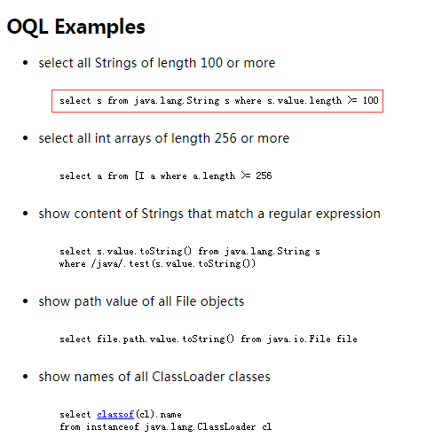
B byte C char D double F float I int J long Z boolean [ 数组，如[I表示int[] [L+类名 其他对象最下面有其他信息链接：
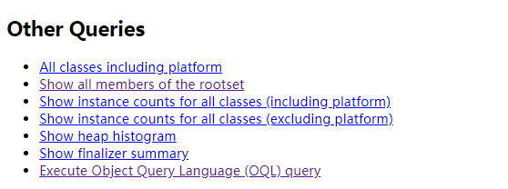
下载软件：Java VisualVM工具，连接某个线程后，点击head dump也可以查看和jmap&jhat实现的功能。
- Cmd控制台:
-
Cmd命令:
jstat（JVM统计监测工具）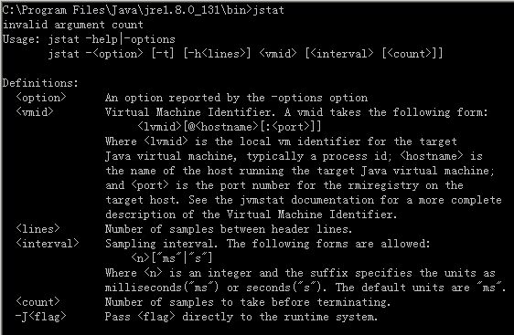
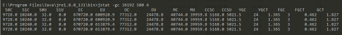
S0C、S1C、S0U、S1U：Survivor 0/1区容量（Capacity）和使用量（Used） EC、EU：Eden区容量和使用量 OC、OU：年老代容量和使用量 PC、PU：永久代容量和使用量 YGC、YGT：年轻代GC次数和GC耗时 FGC、FGCT：Full GC次数和Full GC耗时 GCT：GC总耗时 -
Cmd命令：
jcmd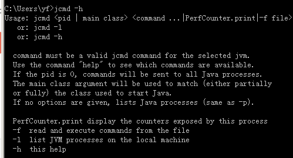
jcmd 31275 Thread.print -l # 打印线程栈 jcmd 31275 VM.command_line # 打印启动命令及参数 jcmd 31275 GC.heap_dump /data/31275.dump # dump heap jcmd 31275 GC.class_histogram #查看类的统计信息 jcmd 31275 VM.system_properties #查看系统属性内容 jcmd 31275 VM.uptime #查看虚拟机启动时间 jcmd 31275 PerfCounter.print #查看性能统计
Maven学习笔记
Maven安装
解压 https://maven.apache.org/download.cgi 最新版
配置 MAVEN_HOME 解压根目录，编辑环境变量 Path，追加 %MAVEN_HOME%\bin\
命令提示符下：
mvn -v
配置 \conf\settings.xml 文件，查找下面这行代码：
<localRepository>本地仓库路径</localRepository>
命令提示符下：
mvn help:system
Nexus安装
解压 https://www.sonatype.com/download-oss-sonatype 2.XX 版本
编辑环境变量 Path ，追加 解压根目录\nexus-版本\bin\
命令提示符下：
nexus
nexus { console : start : stop : restart : install : uninstall }
nexus install （可能会报错）
nexus console （也可以启动）
创建私有nexus
默认管理用户名和密码为 admin/admin123
-
Repositories -> add hosted repository
添加两个repository， repository policy分别为release和snapshot
-
privileges -> add
给两个库添加权限 ： name = 库名-privileges
-
roles -> add nexus role
添加role，分别为刚才添加的两个库的（view/create/delete/read/update）
-
users -> add nexus user
添加user，role为刚添加的role
发布项目到私有nexus
maven仓库的 setting.xml 里面配置
<servers>
<server>
<id>my-nexus-snapshots</id>
<username>my-nexus</username>
<password>admin123</password>
</server>
<server>
<id>my-nexus-releases</id>
<username>my-nexus</username>
<password>admin123</password>
</server>
</servers>
要发布的maven项目里面的pom.xml 文件配置
<distributionManagement>
<snapshotRepository>
<id>my-nexus-snapshots</id>
<name>User Porject Snapshot</name>
<url>http://localhost:8081/nexus/content/repositories/my-nexus-snapshots</url>
<uniqueVersion>false</uniqueVersion>
</snapshotRepository>
<repository>
<id>my-nexus-releases</id>
<name>User Porject Release</name>
<url>http://localhost:8081/nexus/content/repositories/my-nexus-releases</url>
</repository>
</distributionManagement>
添加jar到私有库
在windows的cmd命令下，参考下面安装命令安装jar包。注意：这个命令不能换行
安装指定文件到本地仓库命令：mvn install:install-file
-DgroupId=<groupId>: 设置项目代码的包名(一般用组织名)-DartifactId=<artifactId>: 设置项目名或模块名-Dversion=1.0.0: 版本号-Dpackaging=jar: 什么类型的文件(jar包)-Dfile=<myfile.jar>: 指定jar文件路径与文件名(同目录只需文件名)
安装命令实例：
mvn install:install-file -DgroupId=com.baidu -DartifactId=ueditor -Dversion=1.0.0 -Dpackaging=jar -Dfile=ueditor-1.1.2.jar
Git学习笔记
git clone https://github.com/petterobam/my-sqlite.git
cd my-sqlite/
git status
git add .
git status
git commit -m "提交备注"
git pull
git push
git config --global credential.helper store
push你的代码 (git push), 这时会让你输入用户名和密码, 这一步输入的用户名密码会被记住, 下次再push代码时就不用输入用户名密码!这一步会在用户目录下生成文件.git-credential记录用户名密码的信息
git init
git remote add origin git@github.com:petterobam/database-oop.git
补充提交
git commit -m 'initial commit'
git add forgotten_file
git commit --amend
撤销add 所有
git reset HEAD
git reset HEAD 文件名
设置全局用户
$ git config --global user.name "John Doe"
$ git config --global user.email johndoe@example.com
自定义全局编辑器
$ git config --global core.editor emacs
查看git配置信息
$ git config --list
user.name=John Doe
user.email=johndoe@example.com
color.status=auto
color.branch=auto
color.interactive=auto
color.diff=auto
...
检查git某一项配置
$ git config user.name
John Doe
获取命令帮助说明
- $ git help <verb>
- $ git <verb> --help
- $ man git-<verb>
$ git help config
已有项目中初始化仓库
$ git init
添加提交
$ git add *.c
$ git add LICENSE
$ git commit -m 'initial project version'
克隆现有项目
$ git clone https://github.com/libgit2/libgit2
$ git clone user@server:path/to/repo.git
检查当前文件状态
$ git status
On branch master
nothing to commit, working directory clean
$ git status
On branch master
Untracked files:
(use "git add <file>..." to include in what will be committed)
README.md
nothing added to commit but untracked files present (use "git add" to track)
$ git status
On branch master
Changes to be committed:
(use "git reset HEAD <file>..." to unstage)
new file: README.md
状态概览
$ git status -s
M README
MM Rakefile
A lib/git.rb
M lib/simplegit.rb
?? LICENSE.txt
查看改变的部分
$ git diff
diff --git a/CONTRIBUTING.md b/CONTRIBUTING.md
index 8ebb991..643e24f 100644
--- a/CONTRIBUTING.md
+++ b/CONTRIBUTING.md
@@ -65,7 +65,8 @@ branch directly, things can get messy.
Please include a nice description of your changes when you submit your PR;
if we have to read the whole diff to figure out why you're contributing
in the first place, you're less likely to get feedback and have your change
-merged in.
+merged in. Also, split your changes into comprehensive chunks if your patch is
+longer than a dozen lines.
If you are starting to work on a particular area, feel free to submit a PR
that highlights your work in progress (and note in the PR title that it's
list查看改变的部分
$ git diff --cached
diff --git a/CONTRIBUTING.md b/CONTRIBUTING.md
index 8ebb991..643e24f 100644
--- a/CONTRIBUTING.md
+++ b/CONTRIBUTING.md
@@ -65,7 +65,8 @@ branch directly, things can get messy.
Please include a nice description of your changes when you submit your PR;
if we have to read the whole diff to figure out why you're contributing
in the first place, you're less likely to get feedback and have your change
-merged in.
+merged in. Also, split your changes into comprehensive chunks if your patch is
+longer than a dozen lines.
If you are starting to work on a particular area, feel free to submit a PR
that highlights your work in progress (and note in the PR title that it's
- 高版本list查看改变的部分
$ git diff --staged
diff --git a/README b/README
new file mode 100644
index 0000000..03902a1
--- /dev/null
+++ b/README
@@ -0,0 +1 @@
+My Project
代码提交
$ git commit
提交带上备注
$ git commit -m "Story 182: Fix benchmarks for speed"
直接提交(含git add)
跳过缓存区，不用git add命令，直接提交
$ git commit -a -m 'added new benchmarks'
将文件移出版本管理
$ git rm README.md
$ git rm --cached README.md
$ git rm log/\*.log
移动文件，重命名某个文件
$ git mv file_from file_to
查看提交日志
$ git log
commit ca82a6dff817ec66f44342007202690a93763949
Author: Scott Chacon <schacon@gee-mail.com>
Date: Mon Mar 17 21:52:11 2008 -0700
changed the version number
commit 085bb3bcb608e1e8451d4b2432f8ecbe6306e7e7
Author: Scott Chacon <schacon@gee-mail.com>
Date: Sat Mar 15 16:40:33 2008 -0700
removed unnecessary test
commit a11bef06a3f659402fe7563abf99ad00de2209e6
Author: Scott Chacon <schacon@gee-mail.com>
Date: Sat Mar 15 10:31:28 2008 -0700
first commit
显示详细提交记录数量
$ git log -p -2
commit ca82a6dff817ec66f44342007202690a93763949
Author: Scott Chacon <schacon@gee-mail.com>
Date: Mon Mar 17 21:52:11 2008 -0700
changed the version number
diff --git a/Rakefile b/Rakefile
index a874b73..8f94139 100644
--- a/Rakefile
+++ b/Rakefile
@@ -5,7 +5,7 @@ require 'rake/gempackagetask'
spec = Gem::Specification.new do |s|
s.platform = Gem::Platform::RUBY
s.name = "simplegit"
- s.version = "0.1.0"
+ s.version = "0.1.1"
s.author = "Scott Chacon"
s.email = "schacon@gee-mail.com"
s.summary = "A simple gem for using Git in Ruby code."
commit 085bb3bcb608e1e8451d4b2432f8ecbe6306e7e7
Author: Scott Chacon <schacon@gee-mail.com>
Date: Sat Mar 15 16:40:33 2008 -0700
removed unnecessary test
diff --git a/lib/simplegit.rb b/lib/simplegit.rb
index a0a60ae..47c6340 100644
--- a/lib/simplegit.rb
+++ b/lib/simplegit.rb
@@ -18,8 +18,3 @@ class SimpleGit
end
end
-
-if $0 == __FILE__
- git = SimpleGit.new
- puts git.show
-end
提交日志统计信息
$ git log --stat
commit ca82a6dff817ec66f44342007202690a93763949
Author: Scott Chacon <schacon@gee-mail.com>
Date: Mon Mar 17 21:52:11 2008 -0700
changed the version number
Rakefile | 2 +-
1 file changed, 1 insertion(+), 1 deletion(-)
commit 085bb3bcb608e1e8451d4b2432f8ecbe6306e7e7
Author: Scott Chacon <schacon@gee-mail.com>
Date: Sat Mar 15 16:40:33 2008 -0700
removed unnecessary test
lib/simplegit.rb | 5 -----
1 file changed, 5 deletions(-)
commit a11bef06a3f659402fe7563abf99ad00de2209e6
Author: Scott Chacon <schacon@gee-mail.com>
Date: Sat Mar 15 10:31:28 2008 -0700
first commit
README | 6 ++++++
Rakefile | 23 +++++++++++++++++++++++
lib/simplegit.rb | 25 +++++++++++++++++++++++++
3 files changed, 54 insertions(+)
提交日志每次记录一行展示
$ git log --pretty=oneline
ca82a6dff817ec66f44342007202690a93763949 changed the version number
085bb3bcb608e1e8451d4b2432f8ecbe6306e7e7 removed unnecessary test
a11bef06a3f659402fe7563abf99ad00de2209e6 first commit
定义日志浏览输出格式
$ git log --pretty=format:"%h - %an, %ar : %s"
ca82a6d - Scott Chacon, 6 years ago : changed the version number
085bb3b - Scott Chacon, 6 years ago : removed unnecessary test
a11bef0 - Scott Chacon, 6 years ago : first commit
-------------------------------------------------
%H 提交对象（commit）的完整哈希字串
%h 提交对象的简短哈希字串
%T 树对象（tree）的完整哈希字串
%t 树对象的简短哈希字串
%P 父对象（parent）的完整哈希字串
%p 父对象的简短哈希字串
%an 作者（author）的名字
%ae 作者的电子邮件地址
%ad 作者修订日期（可以用 --date= 选项定制格式）
%ar 作者修订日期，按多久以前的方式显示
%cn 提交者（committer）的名字
%ce 提交者的电子邮件地址
%cd 提交日期提交日期
%cr 提交日期，按多久以前的方式显示
%s 提交说明
-------------------------------------------------
日志浏览截止时间或范围
$ git log --since=2.weeks
日志浏览根据作者筛选
$ git log --author=bob
-------------------------------------------------
-(n) 仅显示最近的 n 条提交
--since, --after 仅显示指定时间之后的提交。
--until, --before 仅显示指定时间之前的提交。
--author 仅显示指定作者相关的提交。
--committer 仅显示指定提交者相关的提交。
--grep 仅显示含指定关键字的提交
-S 仅显示添加或移除了某个关键字的提交
-------------------------------------------------
尝试重提
尝试重提上一个还未push的提交
$ git commit --amend
然后可以git add或git commit 重新写注释
撤销git add
$ git reset HEAD CONTRIBUTING.md
还原某个文件到上一个版本
$ git checkout -- CONTRIBUTING.md
查看远程仓库信息
$ git clone https://github.com/schacon/ticgit
$ cd ticgit
$ git remote -v
origin git@github.com:mojombo/grit.git (fetch)
origin git@github.com:mojombo/grit.git (push)
添加远程仓库版本
$ git remote add pb https://github.com/paulboone/ticgit
$ git remote -v
origin https://github.com/schacon/ticgit (fetch)
origin https://github.com/schacon/ticgit (push)
pb https://github.com/paulboone/ticgit (fetch)
pb https://github.com/paulboone/ticgit (push)
拉取分支但本地没有的信息
$ git fetch pb
remote: Counting objects: 43, done.
remote: Compressing objects: 100% (36/36), done.
remote: Total 43 (delta 10), reused 31 (delta 5)
Unpacking objects: 100% (43/43), done.
From https://github.com/paulboone/ticgit
* [new branch] master -> pb/master
* [new branch] ticgit -> pb/ticgit
将内容提交到远程仓库
git push [remote-name] [branch-name]
$ git push origin master
查看远程仓库
$ git remote show origin
$ git remote show origin
* remote origin
Fetch URL: https://github.com/schacon/ticgit
Push URL: https://github.com/schacon/ticgit
HEAD branch: master
Remote branches:
master tracked
dev-branch tracked
Local branch configured for 'git pull':
master merges with remote master
Local ref configured for 'git push':
master pushes to master (up to date)
远程仓库重命名
$ git remote rename pb paul
$ git remote
origin
paul
远程仓库删除
$ git remote rm paul
$ git remote
origin
列出已有标签
$ git tag
v0.1
v1.3
$ git tag -l 'v1.8.5*'
v1.8.5
v1.8.5-rc0
v1.8.5-rc1
v1.8.5-rc2
v1.8.5-rc3
v1.8.5.1
v1.8.5.2
v1.8.5.3
v1.8.5.4
v1.8.5.5
创建附注标签
$ git tag -a v1.4 -m 'my version 1.4'
$ git tag
v0.1
v1.3
v1.4
$ git show v1.4
tag v1.4
Tagger: Ben Straub <ben@straub.cc>
Date: Sat May 3 20:19:12 2014 -0700
my version 1.4
commit ca82a6dff817ec66f44342007202690a93763949
Author: Scott Chacon <schacon@gee-mail.com>
Date: Mon Mar 17 21:52:11 2008 -0700
changed the version number
创建轻量标签
$ git tag v1.4-lw
$ git tag
v0.1
v1.3
v1.4
v1.4-lw
v1.5
$ git show v1.4-lw
commit ca82a6dff817ec66f44342007202690a93763949
Author: Scott Chacon <schacon@gee-mail.com>
Date: Mon Mar 17 21:52:11 2008 -0700
changed the version number
给某次提交记录打标签
$ git tag -a v1.2 9fceb02
$ git show v1.2
tag v1.2
Tagger: Scott Chacon <schacon@gee-mail.com>
Date: Mon Feb 9 15:32:16 2009 -0800
version 1.2
commit 9fceb02d0ae598e95dc970b74767f19372d61af8
Author: Magnus Chacon <mchacon@gee-mail.com>
Date: Sun Apr 27 20:43:35 2008 -0700
updated rakefile
...
共享标签到远程仓库
$ git push origin v1.5
$ git push origin --tags
检出标签
git checkout -b [branchname] [tagname]
$ git checkout -b version2 v2.0.0
Switched to a new branch 'version2'
为git命令设置别名
$ git config --global alias.co checkout
$ git config --global alias.br branch
$ git config --global alias.ci commit
$ git config --global alias.st status
$ git config --global alias.unstage 'reset HEAD --'
$ git unstage fileA
等同于 git reset HEAD -- fileA
$ git config --global alias.last 'log -1 HEAD'
$ git last
commit 66938dae3329c7aebe598c2246a8e6af90d04646
Author: Josh Goebel <dreamer3@example.com>
Date: Tue Aug 26 19:48:51 2008 +0800
test for current head
Signed-off-by: Scott Chacon <schacon@example.com>
$ git config --global alias.visual '!gitk'
git config --global gui.encoding utf-8
切换分支
$ git checkout [barcher-name]
在某个问题上建立一个分支
比如：问题##53
$ git checkout -b iss53
或者
$ git branch iss53
$ git checkout iss53
比如有个紧急问题分支，先切换到紧急分支
$ git checkout -b hotfix
将紧急分支merge到主干
$ git checkout master
$ git merge hotfix
紧急分支切换回来继续工作
解决问题后删除紧急分支，然后切换回来继续解决原来问题
$ git branch -d hotfix
$ git checkout iss53
$ git checkout master
Switched to branch 'master'
$ git merge iss53
Merge made by the 'recursive' strategy.
index.html | 1 +
1 file changed, 1 insertion(+)
$ git branch -d iss53
merge冲突解决
图形化界面
$ git mergetool
分支管理
$ git branch
iss53
* master
testing
$ git branch -v
iss53 93b412c fix javascript issue
* master 7a98805 Merge branch 'iss53'
testing 782fd34 add scott to the author list in the readmes
$ git branch --merged
查看合并过的分支
在这个列表中分支名字前没有 * 号的分支通常可以使用 git branch -d 删除掉
$ git branch --no-merged
查看未合并过的分支
远程分支
“origin” 并无特殊含义
远程仓库名字 “origin” 与分支名字 “master” 一样，在 Git 中并没有任何特别的含义一样。 同时 “master” 是当你运行 git init 时默认的起始分支名字，原因仅仅是它的广泛使用，“origin” 是当你运行 git clone 时默认的远程仓库名字。 如果你运行 git clone -o booyah，那么你默认的远程分支名字将会是 booyah/master。
$ git push origin serverfix
将分支推送到远程仓库
$ git fetch origin
remote: Counting objects: 7, done.
remote: Compressing objects: 100% (2/2), done.
remote: Total 3 (delta 0), reused 3 (delta 0)
Unpacking objects: 100% (3/3), done.
From https://github.com/schacon/simplegit
* [new branch] serverfix -> origin/serverfix
可以运行 git merge origin/serverfix 将这些工作合并到当前所在的分支。 如果想要在自己的 serverfix 分支上工作，可以将其建立在远程跟踪分支之上：
$ git checkout -b serverfix origin/serverfix
跟踪分支
$ git checkout --track origin/serverfix
如果想要将本地分支与远程分支设置为不同名字，你可以轻松地增加一个不同名字的本地分支的上一个命令：
$ git checkout -b sf origin/serverfix
拉取分支
git pull 的魔法经常令人困惑所以通常单独显式地使用 fetch 与 merge
删除远程分支
假设你已经通过远程分支做完所有的工作了 - 也就是说你和你的协作者已经完成了一个特性并且将其合并到了远程仓库的 master 分支（或任何其他稳定代码分支）。 可以运行带有 --delete 选项的 git push 命令来删除一个远程分支。 如果想要从服务器上删除 serverfix 分支，运行下面的命令：
$ git push origin --delete serverfix
变基
你可以使用 rebase 命令将提交到某一分支上的所有修改都移至另一分支上，就好像“重新播放”一样。
$ git checkout experiment
$ git rebase master
快进合并 master 分支，使之包含来自 client 分支的修改
$ git rebase master server
变基的风险
呃，奇妙的变基也并非完美无缺，要用它得遵守一条准则：
不要对在你的仓库外有副本的分支执行变基。
官方文档
https://git-scm.com/book/zh/v2
thymeleaf学习笔记
-
thymeleaf 为
*.html文档 -
定义为thymeleaf文档时候，html标签上添加如下自定义属性：
<html xmlns:th="http://www.thymeleaf.org"> -
如上，我们定义
xmlns:th，下面就可以用th作为 thymeleaf 的标识属性th标签主要有：th:id 替换id <input th:id="'xxx' + ${collect.id}"/> th:text 文本替换 <p th:text="${collect.description}">description</p> th:utext 支持html的文本替换 <p th:utext="${htmlcontent}">conten</p> th:object 替换对象 <div th:object="${session.user}"> th:value 属性赋值 <input th:value="${user.name}" /> th:with 变量赋值运算 <div th:with="isEven=${prodStat.count}%2==0"></div> th:style 设置样式 th:style="'display:' + @{(${sitrue} ? 'none' : 'inline-block')} + ''" th:onclick 点击事件 th:onclick="'getCollect()'" th:each 属性赋值 tr th:each="user,userStat:${users}"> th:if 判断条件 <a th:if="${userId == collect.userId}" > th:unless 和th:if判断相反 <a th:href="@{/login}" th:unless=${session.user != null}>Login</a> th:href 链接地址 <a th:href="@{/login}" th:unless=${session.user != null}>Login</a> /> th:switch 多路选择 配合th:case 使用 <div th:switch="${user.role}"> th:case th:switch的一个分支 <p th:case="'admin'">User is an administrator</p> th:fragment 布局标签，定义代码片段，方便其它地方引用 <div th:fragment="alert"> th:include 布局标签，替换内容到引入的文件 <head th:include="layout :: htmlhead" th:with="title='xx'"></head> th:replace 布局标签，替换整个标签到引入的文件 <div th:replace="fragments/header :: title"></div> th:selected selected选择框 选中 th:selected="(${xxx.id} == ${configObj.dd})" th:src 图片类地址引入 <img th:src="@{/img/logo.png}" /> th:inline 定义js脚本可以使用变量 <script type="text/javascript" th:inline="javascript"> th:action 表单提交的地址 <form action="subscribe.html" th:action="@{/subscribe}"> th:remove 删除某个属性 <tr th:remove="all"> 1.all:删除包含标签和所有的孩子。 th:attr th:attr="src=@{/image/aa.jpg},title=#{logo}"，此标签不太优雅，一般用的比较少。
Grunt学习笔记
概念
搭建自动化web前端开发环境
安装
-
前提依赖nodejs
-
全局安装grunt命令工具：
npm install -g grunt-cli
文件目录
/package.json #必备，可以通过npm init 创建
/Gruntfile.js #必备，可以参照https://github.com/gruntjs/grunt-init-gruntfile
```json
{
"name": "grunt-test",
"version": "1.0.0",
"devDependencies": {
}
}
```
module.exports = function(grunt) {
//任务配置
grunt.initConfig({
//获取package.json信息
pkg: grunt.file.readJSON('package.json')
});
//输入grunt默认执行什么
grunt.registerTask(‘default’,[]);
};
插件安装
- 通过 npm install -g grunt-init 命令安装 grunt-init
- 通过 git clone git://github.com/gruntjs/grunt-init-gruntplugin.git ~/.grunt-init/gruntplugin 命令安装grunt插件模版。
- 在一个空的目录中执行 grunt-init gruntplugin 。
- 执行 npm install 命令以准备开发环境。
- 为你的插件（任务）书写代码。
- 执行 npm publish 命令将你创建的 Grunt 插件（任务）发布到npm！
文档
http://www.gruntjs.net/getting-started
Docker学习笔记
Docker安装
官网下载安装
docker version
Client:
Version: 18.03.1-ce
API version: 1.37
Go version: go1.9.5
Git commit: 9ee9f40
Built: Thu Apr 26 07:12:48 2018
OS/Arch: windows/amd64
Experimental: false
Orchestrator: swarm
Server:
Engine:
Version: 18.03.1-ce
API version: 1.37 (minimum version 1.12)
Go version: go1.9.5
Git commit: 9ee9f40
Built: Thu Apr 26 07:22:38 2018
OS/Arch: linux/amd64
Experimental: false
Docker部署MySQL
docker pull mysql
docker images
docker run --name first-mysql -p 3306:3306 -e MYSQL_ROOT_PASSWORD=111111 -d mysql
docker ps
docker ps -a
docker ps -q
用Navicat等客户端连接试试
docker exec -it first-mysql /bin/bash
root@17f262428195:/## mysql -uroot -p
Enter password:
mysql> select user,host,password from mysql.user;
ERROR 1054 (42S22): Unknown column 'password' in 'field list'
mysql> select user,host,authentication_string from mysql.user;
+------------------+-----------+------------------------------------------------------------------------+
| user | host | authentication_string |
+------------------+-----------+------------------------------------------------------------------------+
| root | % | $A$005$~5l<oK■3♠w|x↕↓Kb▼"B&DWiM2vU56iRdVsCQYZZ/YjO3JjLVUCF5D8j8miag7GC |
| mysql.infoschema | localhost | *THISISNOTAVALIDPASSWORDTHATCANBEUSEDHERE |
| mysql.session | localhost | *THISISNOTAVALIDPASSWORDTHATCANBEUSEDHERE |
| mysql.sys | localhost | *THISISNOTAVALIDPASSWORDTHATCANBEUSEDHERE |
| root | localhost | $A$005$eIeeny;▲.NJ\86=>RZTjiT2Vl1GvBdICEP7O3E/9HftqxGJR5enw8WOZPH3 |
+------------------+-----------+------------------------------------------------------------------------+
5 rows in set (0.00 sec)
搞一波授权没成功，这个mysql版本为8.0的，有些sql执行有问题。
docker stop first-mysql
docker rm first-mysql
docker pull mysql-57-centos7
docker pull tomcat
docker pull nginx
3D Max学习笔记
界面
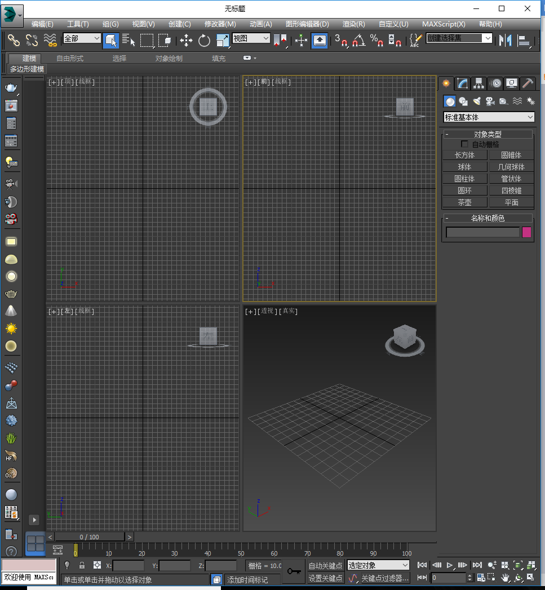
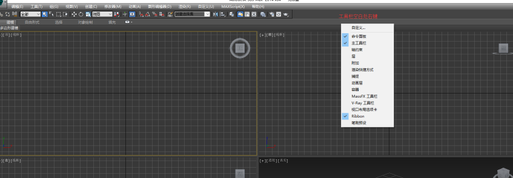
- 自定义单位长度为毫米
- 自定义锁电UI布局
- 自定义文件备份间隔15分钟
- 自动备份的文件在：
C:\Users\当前用户名\Documents\3dsMax\autoback目录下
创建
- 左键选形状，拖动创建，右键结束
- 移动视图：按住鼠标滚轮
- 视图缩放：滚动鼠标滚轮，以鼠标放的地方为中心缩放
- 环绕观察：
alt+鼠标滚轮 - 最大化显示视图：
Z - 最大化视图：
alt + W - 最大化某个物体：
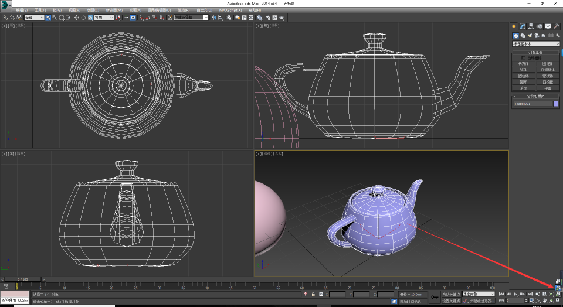 -
透明化物体：
alt + x - 显示隐藏栅格：
G
渲染
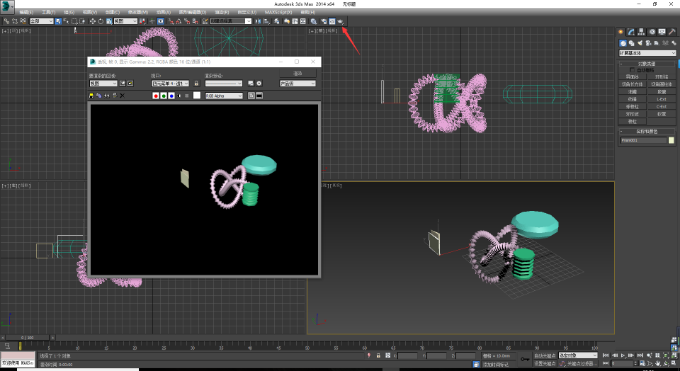
选中模式
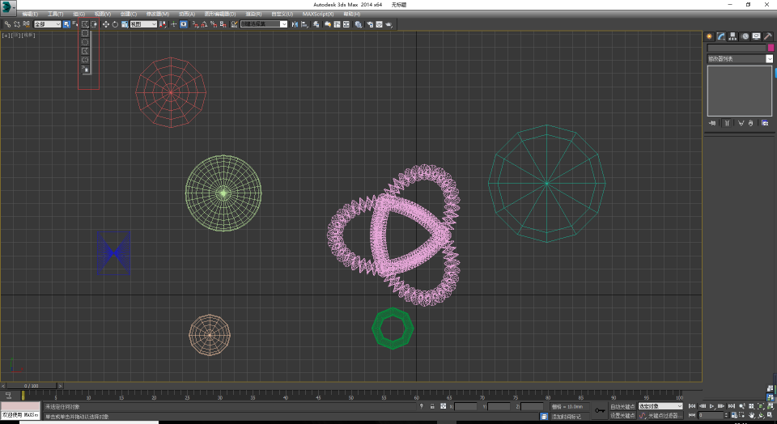
自定义 - 首选项 - 按方向交叉/窗口选择
Ctrl + 鼠标 累加选择
Alt + 鼠标 减选
隐藏

## 自动栅格
在某平面上创建基本体：勾选自动栅格

## 选择并移动
选择并移动：```W```
参照物：世界坐标、局部坐标
## 复制